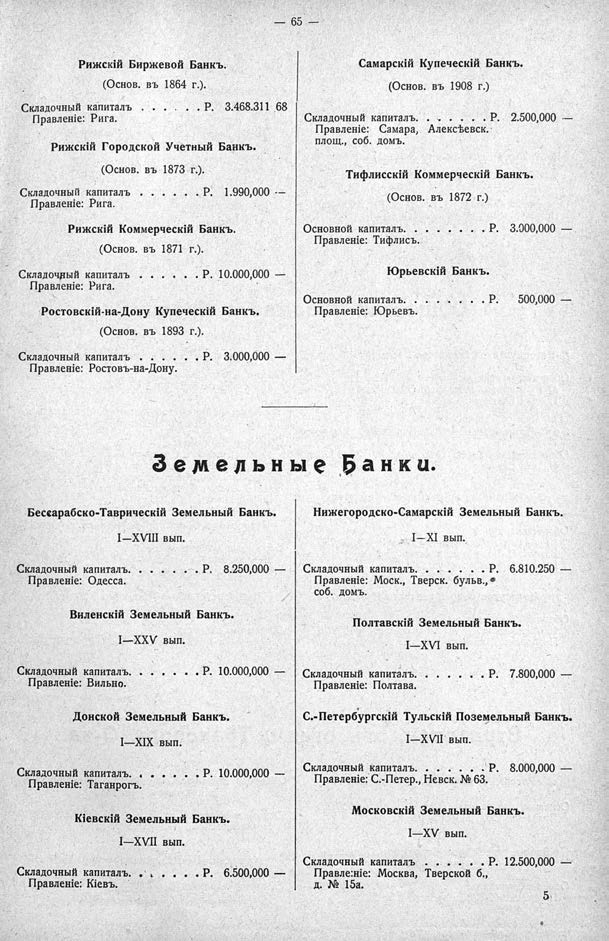

Лист источника 111
Скан

Распознанный текст
— 65 —
Рижскій Биржевой Банкъ.
(Основ. въ 1864 г.).
Складочный капиталъ . . . . . Р. 3.468.311 68
Правленіе: Рига.
Рижскій Городской Учетный Банкъ.
(Основ. въ 1873 г.).
Складочный капиталъ . . . . . Р. 1.990,000 —
Правленіе: Рига.
Рижскій Коммерческій Банкъ.
(Основ. въ 1871 г.).
Складочный капиталъ . . . . . Р. 10.000,000 —
Правленіе: Рига.
Ростовскій-на-Дону Купеческій Банкъ.
(Основ. въ 1893 г.).
Складочный капиталъ . . . . . Р. 3.000,000 —
Правленіе: Ростовъ-на-Дону.
Самарскій Купеческій Банкъ.
(Основ. въ 1908 г.)
Складочный капиталъ. . . . . . Р. 2.500,000 —
Правленіе: Самара, Алексѣевск.
площ., соб. домъ.
Тифлисскій Коммерческій Банкъ.
(Основ. въ 1872 г.)
Основной капиталъ. . . . . . Р. 3.000,000 —
Правленіе: Тифлисъ.
Юрьевскій Банкъ.
Основной капиталъ. . . . . . Р. 500,000 —
Правленіе: Юрьевъ.
Земельные Банки.
Бессарабско-Таврическій Земельный Банкъ.
I—XVIII вып.
Складочный капиталъ. . . . . . Р. 8.250,000 —
Правленіе: Одесса.
Виленскій Земельный Банкъ.
I—XXV вып.
Складочный капиталъ. . . . . . Р. 10.000,000 —
Правленіе: Вильно.
Донской Земельный Банкъ.
I—XIX вып.
Складочный капиталъ. . . . . . Р. 10.000,000 —
Правленіе: Таганрогъ.
Кіевскій Земельный Банкъ.
I—XVII вып.
Складочный капиталъ. . . . . . Р. 6.500,000 —
Правленіе: Кіевъ.
Нижегородско-Самарскій Земельный Банкъ.
I—XI вып.
Складочный капиталъ. . . . . . Р. 6.810.250 —
Правленіе: Моск., Тверск. бульв.,
соб. домъ.
Полтавскій Земельный Банкъ.
I—XVI вып.
Складочный капиталъ. . . . . . Р. 7.800,000 —
Правленіе: Полтава.
С.-Петербургскій Тульскій Поземельный Банкъ.
I—XVII вып.
Складочный капиталъ. . . . . . Р. 8.000,000 —
Правленіе: С.-Петер., Невск. № 63.
Московскій Земельный Банкъ.
I—XV вып.
Складочный капиталъ . . . . . Р. 12.500,000 —
Правленіе: Москва, Тверской б.,
д. № 15а.
5